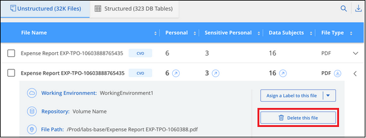

Request doc changes
Request doc changes Edit this page
Edit this page Learn how to contribute
Learn how to contributeManaging your private data
Contributors
Cloud Data Sense provides many ways for you to manage your private data. Some functionality makes it easier to prepare for migrating your data, while other functionality allows you to make changes to the data.
-
You can copy files to a destination NFS share if you want to make a copy of certain data and move it to a different NFS location.
-
You can clone an ONTAP volume to a new volume, while including only selected files from the source volume in the new cloned volume. This is useful for situations where you’re migrating data and you want to exclude certain files from the original volume.
-
You can copy and synchronize files from a source repository to a directory in a specific destination location. This is useful for situations where you’re migrating data from one source system to another while there is still some final activity on the source files.
-
You can move source files that Data Sense is scanning to any NFS share.
-
You can delete files that seem insecure or too risky to leave in your storage system, or that you have identified as duplicate.

|
|
Copying source files
You can copy any source files that Data Sense is scanning. There are three types of copy operations depending on what you’re trying to accomplish:
-
Copy files from the same, or different, volumes or data sources to a destination NFS share.
This is useful if you want to make a copy of certain data and move it to a different NFS location.
-
Clone an ONTAP volume to a new volume in the same aggregate, but include only selected files from the source volume in the new cloned volume.
This is useful for situations where you’re migrating data and you want to exclude certain files from the original volume. This action uses the NetApp FlexClone functionality to quickly duplicate the volume and then remove the files that you didn’t select.
-
Copy and synchronize files from a single source repository (ONTAP volume, S3 bucket, NFS share, etc.) to a directory in a specific destination (target) location.
This is useful for situations where you’re migrating data from one source system to another. After the initial copy, the service syncs any changed data based on the schedule that you set. This action uses the NetApp Cloud Sync functionality to copy and sync data from a source to a target.
Copying source files to an NFS share
You can copy source files that Data Sense is scanning to any NFS share. The NFS share doesn’t need to be integrated with Data Sense, you just need to know the name of the NFS share where all selected files will be copied in the format <host_name>:/<share_path>.

|
You can’t copy files that reside in databases. |
-
You must have the Account Admin or Workspace Admin role to copy files.
-
Copying files requires that the destination NFS share allows access from the Data Sense instance.
-
You can copy a maximum of 100,000 files at a time.
-
In the Data Investigation results pane, select the file, or files, that you want to copy, and click Copy.

-
To select individual files, check the box for each file (
 ).
). -
To select all files on the current page, check the box in the title row (
 ).
). -
To select all files on all pages, check the box in the title row (
), and then in the pop-up message  , click Select all items in list (xxx items).
, click Select all items in list (xxx items).
-
-
In the Copy Files dialog, select the Regular Copy tab.

-
Enter the name of the NFS share where all selected files will be copied in the format
<host_name>:/<share_path>, and click Copy.A dialog appears with the status of the copy operation.
You can view the progress of the copy operation in the Actions Status pane.
Note that you can also copy an individual file when viewing the metadata details for a file. Just click Copy File.

Cloning volume data to a new volume
You can clone an existing ONTAP volume that Data Sense is scanning using NetApp FlexClone functionality. This allows you to quickly duplicate the volume while including only those files you selected. This is useful if you’re migrating data and you want to exclude certain files from the original volume, or if you want to create a copy of a volume for testing.
The new volume is created in the same aggregate as the source volume. Ensure that you have enough space for this new volume in the aggregate before you start this task. Contact your storage administrator if necessary.
Note: FlexGroup volumes can’t be cloned because they’re not supported by FlexClone.
-
You must have the Account Admin or Workspace Admin role to copy files.
-
All selected files must be from the same volume, and the volume must be online.
-
The volume must be from a Cloud Volumes ONTAP or on-premises ONTAP system. No other data sources are currently supported.
-
The FlexClone license must be installed on the cluster. This license is installed by default on Cloud Volumes ONTAP systems.
-
In the Data Investigation pane, create a filter by selecting a single Working Environment and a single Storage Repository to make sure all the files are from the same ONTAP volume.

Apply any other filters so that you’re seeing only the files that you want to clone to the new volume.
-
In the Investigation results pane, select the files that you want to clone and click Copy.
-
To select individual files, check the box for each file (
). -
To select all files on the current page, check the box in the title row (
). -
To select all files on all pages, check the box in the title row (
), and then in the pop-up message , click Select all items in list (xxx items).
-
-
In the Copy Files dialog, select the FlexClone tab. This page shows the total number of files that will be cloned from the volume (the files you selected), and the number of files that are not included/deleted (the files you didn’t select) from the cloned volume.

-
Enter the name of the new volume, and click FlexClone.
A dialog appears with the status of the clone operation.
The new, cloned volume is created in the same aggregate as the source volume.
You can view the progress of the clone operation in the Actions Status pane.
If you initially selected Map all volumes or Map & Classify all volumes when you enabled Data Sense for the working environment where the source volume resides, then Data Sense will scan the new cloned volume automatically. If you didn’t use either of these selections initially, then if you want to scan this new volume, you’ll need to enable scanning on the volume manually.
Copying and synchronizing source files to a target system
You can copy source files that Data Sense is scanning from any supported unstructured data source to a directory in a specific target destination location (target locations that are supported by Cloud Sync). After the initial copy, any data changed in the files are synchronized based on the schedule that you configure.
This is useful for situations where you’re migrating data from one source system to another. This action uses the NetApp Cloud Sync functionality to copy and sync data from a source to a target.
|
|
You can’t copy and sync files that reside in databases, OneDrive accounts, or SharePoint accounts. |
-
You must have the Account Admin or Workspace Admin role to copy and sync files.
-
All selected files must be from the same source repository (ONTAP volume, S3 bucket, NFS or CIFS share, etc.).
-
You’ll need to activate the Cloud Sync service and configure a minimum of one data broker that can be used to transfer files between the source and target systems. Review the Cloud Sync requirements beginning with the Quick Start description.
Note that the Cloud Sync service has separate service charges for your sync relationships, and will incur resource charges if you deploy the data broker in the cloud.
-
In the Data Investigation pane, create a filter by selecting a single Working Environment and a single Storage Repository to make sure all the files are from the same repository.
Apply any other filters so that you’re seeing only the files that you want to copy and sync to the destination system.
-
In the Investigation results pane, select all files on all pages by checking the box in the title row (
), then in the pop-up message click Select all items in list (xxx items), and then click Copy.
-
In the Copy Files dialog, select the Sync tab.

-
If you are sure that you want to sync the selected files to a destination location, click OK.
The Cloud Sync UI is opened in Cloud Manager.
You are prompted to define the sync relationship. The Source system is pre-populated based on the repository and files you already selected in Data Sense.
-
You’ll need to select the Target system and then select (or create) the Data Broker you plan to use. Review the Cloud Sync requirements beginning with the Quick Start description.
The files are copied to the target system and they’ll be synchronized based on the schedule you define. If you select a one-time sync then the files are copied and synchronized one time only. If you choose a periodic sync, then the files are synchronized based on the schedule. Note that if the source system adds new files that match the query you created using filters, those new files will be copied to the destination and synchronized in the future.
Note that some of the usual Cloud Sync operations are disabled when it is invoked from Data Sense:
-
You can’t use the Delete Files on Source or Delete Files on Target buttons.
-
Running a report is disabled.
Moving source files to an NFS share
You can move source files that Data Sense is scanning to any NFS share. The NFS share doesn’t need to be integrated with Data Sense (see Scanning file shares).
|
|
You can’t move files that reside in databases. |
You must have the Account Admin or Workspace Admin role to move files.
Moving files requires that the NFS share allows access from the Data Sense instance.
-
In the Data Investigation results pane, select the file, or files, that you want to move.

-
To select individual files, check the box for each file (
). -
To select all files on the current page, check the box in the title row (
).
-
-
From the button bar, click Move.

-
In the Move Files dialog, enter the name of the NFS share where all selected files will be moved in the format
<host_name>:/<share_path>, and click Move Files.
Note that you can also move an individual file when viewing the metadata details for a file. Just click Move File.

Deleting source files
You can permanently remove source files that seem insecure or too risky to leave in your storage system, or that you’ve identified as a duplicate. This action is permanent and there is no undo or restore.
You can delete files manually from the Investigation pane, or automatically using Policies.
|
|
You can’t delete files that reside in databases. |
Deleting files requires the following permissions:
-
For NFS data – the export policy needs to be defined with write permissions.
-
For CIFS data – the CIFS credentials need to have write permissions.
-
For S3 data - the IAM role must include the following permission:
s3:DeleteObject.
Deleting source files manually
-
You must have the Account Admin or Workspace Admin role to delete files.
-
You can delete a maximum of 100,000 files at a time.
-
In the Data Investigation results pane, select the file, or files, that you want to delete.

-
To select individual files, check the box for each file (
). -
To select all files on the current page, check the box in the title row (
). -
To select all files on all pages, check the box in the title row (
), and then in the pop-up message , click Select all items in list (xxx items).
-
-
From the button bar, click Delete.
-
Because the delete operation is permanent, you must type "permanently delete" in the subsequent Delete File dialog and click Delete File.
You can view the progress of the delete operation in the Actions Status pane.
Note that you can also delete an individual file when viewing the metadata details for a file. Just click Delete file.

Deleting source files automatically using Policies
You can create a custom Policy to delete files that match the policy. For example, you may want to delete files that contain sensitive information and were discovered by Data Sense in the past 30 days.
Only Account Admins can create a policy to automatically delete files.
|
|
All files that match the policy will be permanently deleted once a day. |
-
From the Data Investigation page, define your search by selecting all the filters you want to use. See Filtering data in the Data Investigation page for details.
-
Once you have all the filter characteristics just the way you want them, click Create Policy from this search.
-
Name the Policy and select other actions that can be performed by the Policy:
-
Enter a unique name and description.
-
Check the box to "Automatically delete files that match this policy" and type permanently delete to confirm that you want files permanently deleted by this policy.
-
Click Create Policy.

-
The new Policy appears in the Policies tab. Files that match the policy are deleted once per day when the policy runs.
You can view the list of files that have been deleted in the Actions Status pane.
Viewing the status of your compliance actions
When you run an action from the Investigation Results pane across many files, for example, deleting 100 files, the process can take some time. You can monitor the status of these asynchronous actions in the Action Status pane so you’ll know when it has been applied to all files. This allows you to see the actions that have completed successfully, those currently in progress, and those that have failed so you can diagnose and fix any problems.
The status can be:
-
Finished
-
In Progress
-
Queued
-
Canceled
-
Failed
Note that you can Cancel any actions that have the "Queued" or "In Progress" status.
-
In the bottom-right of the Data Sense UI you can see the Actions Status button .
-
Click this button and the most recent 20 actions are listed.
You can click the name of an action to view details corresponding to that operation.